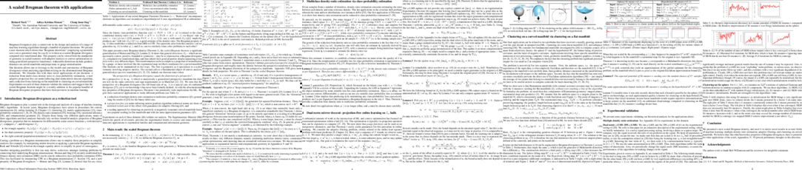

Below every paper are TOP 100 most-occuring words in that paper and their color is based on LDA topic model with k = 7.
(It looks like 0 = theory, 1 = reinforcement learning, 2 = graphical models, 3 = deep learning/vision, 4 = optimization, 5 = neuroscience, 6 = embeddings etc.)
Toggle LDA topics to sort by:
TOPIC0
TOPIC1
TOPIC2
TOPIC3
TOPIC4
TOPIC5
TOPIC6
Deep ADMM-Net for Compressive Sensing MRI
yan yang, Jian Sun, Huibin Li, Zongben Xu
yan yang, Jian Sun, Huibin Li, Zongben Xu

[update, given, ratio] [layer, network, number, training, corresponding, architecture] [can, regularization, loss, learning, following, significantly] [reconstruction, admm, deep, flow, transform, graph, mri, stage, sampling, function, output, method, reconstructed, fast, defined, convolution, nonlinear, accuracy, sensing, computational, learned, nmse, initialized, sparse, computed, test, filter, multiplier, magnetic, shown, compressive, brain, resonance, achieves, general, shrinkage, three, psnr, four, ieee, imaging, novel, learn, chest, gradient, optimization, iterative, operation, min, dictionary, undersampled, pano, compute, train, compared, arg, net, direction] [time] [image, figure, different, also] [data, using, algorithm, first, set, high]
On Regularizing Rademacher Observation Losses
Richard Nock
Richard Nock

[theorem, table, may, given, log, since, update] [number, training, several, corresponding] [oost, rado, loss, regularized, learning, boosting, rados, equivalent, can, learner, example, weak, classifier, equivalence, slope, let, regularization, step, linear, proportionate, exponential, efficient, logistic, max, definition, sufficient, rademacher, supervised, iff, now, suppose, feature, sparsity, domain, regularizing, following, via, significantly, fit, fix, fact, obtain, large, maxj, accurate, even, regularizer, size, depend, key, minimization, constraint, theory, provide, condition, hold, exp, end, datasets] [shown, defined] [two, one, order, good] [show, also, different] [algorithm, using, set, data, first]
Fast and Provably Good Seedings for k-Means
Olivier Bachem, Mario Lucic, Hamed Hassani, Andreas Krause
Olivier Bachem, Mario Lucic, Hamed Hassani, Andreas Krause
[log, theorem, table, probability, approximation, given] [sample, outperforms, several, across] [step, can, let, even, provide, key, total] [computational, fast, sampled, compared, sampling] [chain, random, markov, one, two, bound, good, section] [distribution, without, different, also, based, used] [data, algorithm, free, ssumption, solution, seeding, distance, proposal, error, length, quality, set, using, complexity, theoretical, expected, clustering, preprocessing, first, quantization, requires, full, web, guarantee, center, main, bachem, consider, optimal, provably, uniformly, propose, competitive, cluster, afk, rna, initial, denote, kdd, susy]
Unsupervised Learning for Physical Interaction through Video Prediction
Chelsea Finn, Ian Goodfellow, Sergey Levine
Chelsea Finn, Ian Goodfellow, Sergey Levine
[new] [trained, use, performance, training, produce, well, feedforward] [learning, can] [method, learn, test] [state, one, two, time, directly] [video, prediction, model, motion, image, previous, future, object, pixel, figure, neural, predicted, lstm, cdna, predict, human, physical, different, multiple, also, dataset, show, convolutional, prior, proposed, robot, action, applied, without, vision, frame, predicts, conv, predicting, used, mask, interaction, internal, stp, unsupervised, spatial, explicitly, next, robotic, including, interactive, work, predictive, million, previously, evaluate, raw, appearance, reconstruct, transformation] [using, information, conference, processing, approach, computer, international, data]
Visual Dynamics: Probabilistic Future Frame Synthesis via Cross Convolutional Networks
Tianfan Xue, Jiajun Wu, Katherine Bouman, Bill Freeman
Tianfan Xue, Jiajun Wu, Katherine Bouman, Bill Freeman

[given, problem, map, reference] [network, training, layer, sample, deterministic, use] [feature, can, learning] [learned, deep, test, flow, method, learn, shown, novel, function, output] [two, simple] [motion, image, model, figure, distribution, future, frame, input, convolutional, video, also, cross, visual, variational, different, generative, prediction, conditional, possible, observed, representation, difference, encoder, show, single, proposed, dataset, without, probabilistic, real, latent, field, learns, synthesize, synthesis, movement, variance, neural, multiple, unsupervised, scale, autoencoder, decoder, kernel, work, able, predict, rgb, michael, toy, next, recognition, often, optical] [using, algorithm, mean, set, first, propose]
Swapout: Learning an ensemble of deep architectures
Saurabh Singh, Derek Hoiem, David Forsyth
Saurabh Singh, Derek Hoiem, David Forsyth

[table, may, constant] [swapout, stochastic, network, dropout, resnet, layer, training, residual, number, use, trained, inference, depth, unit, performance, deterministic, block, batch, width, randomly, schedule, wider, corresponding, skip, form, increasing, comparable, better, average, bernoulli, several, represent, improves, similar, pooling, standard, well, outperforms, relatively, experimental, note, dropping, performs, ensemble, equation, improve, outperform, across, randomness, stochasticity, others] [can, learning, regularization, large] [deep, method, gradient, output, general] [random, one, two] [model, convolutional, different, neural, show, work, used, input] [set, using, error, mean, competitive]
Scan Order in Gibbs Sampling: Models in Which it Matters and Bounds on How Much
Bryan D. He, Christopher M. De Sa, Ioannis Mitliagkas, Christopher Ré
Bryan D. He, Christopher M. De Sa, Ioannis Mitliagkas, Christopher Ré

[probability, theorem] [number, sample, corresponding, choice, several] [can, following, best] [sampling, space, method] [scan, systematic, mixing, random, two, state, variable, order, bridge, gibbs, time, island, chain, markov, conductance, tmix, transition, one, will, effect, permutation, efficiency, factor, move, mix, polynomial, true, sequence, augmented, stationary, mass, needed, section, prove, faster, bound, conjecture, good, statistical, asymptotic, discrete, relative, onto, must, pyramid, small, slower, always, distributed, way, sampler, bad, worst, nsf, lazy] [model, distribution, different, show, single, used, figure] [using, information, set, first, matrix, result]
High-Rank Matrix Completion and Clustering under Self-Expressive Models
Ehsan Elhamifar
Ehsan Elhamifar

[since, convex, problem, given, ambient] [number, performs, performance, better, use] [can, learning, via, large] [function, sparse, method, optimization, ieee, min, graph, reconstruction] [] [figure, different, motion, real, dataset, representation, show, neural] [data, missing, completion, clustering, matrix, fraction, cij, using, algorithm, subspace, error, notice, lrmc, mfa, computer, incomplete, point, recover, solution, corrupted, lie, conference, machine, union, international, framework, ssc, complete, due, synthetic, similarity, set, rank, propose, information, deal, objective, subset, consider, solve, lifting, first, finding, journal, whose, selecting, cin, pattern, nonzero, cjj]
A scaled Bregman theorem with applications
Richard Nock, Aditya Menon, Cheng Soon Ong
Richard Nock, Aditya Menon, Cheng Soon Ong
[bregman, theorem, convex, density, estimation, table, lemma, ratio, scaled, skm, divergence, manifold, may, since, log, problem, perspective, norm, sphere, map, drec, approximation, adaptive, reduction, online, appendix, new, given, dual, curved, multiclass, related, euclidean, signal, binary, flat, case, mirror, hyperboloid, geodesic, potential, update, beat, spherical, optimisation, suitable, significant, normalisation, university, differentiable] [use, estimate, improvement] [can, learning, loss, step, fact, let, exponential, via, now] [three, function, general, ieee, novel] [one, two, bound] [vector, figure, different, used] [clustering, lifting, seeding, using, distance, matrix]
Learning a Probabilistic Latent Space of Object Shapes via 3D Generative-Adversarial Modeling
Jiajun Wu, Chengkai Zhang, Tianfan Xue, Bill Freeman, Josh Tenenbaum
Jiajun Wu, Chengkai Zhang, Tianfan Xue, Bill Freeman, Josh Tenenbaum

[table] [training, network, use, performance, sample, preprint] [learning, can, generator, loss, following, supervised] [space, learned, deep, reconstruction, novel, accuracy, higher, test] [two] [object, generative, adversarial, image, show, latent, figure, shape, discriminator, model, representation, generated, vector, single, convolutional, distribution, also, without, modeling, volumetric, probabilistic, ikea, used, classification, structure, girdhar, sharma, synthesize, synthesis, consists, discriminative, based, generate, voxel, neural, unsupervised, evaluate, thomas, input, previous, semantic, mit, radford, different, dataset, able, demonstrate, generating, observe, leonidas, qualitative, supervision, variational, synthesized, proposed] [using, framework, data]